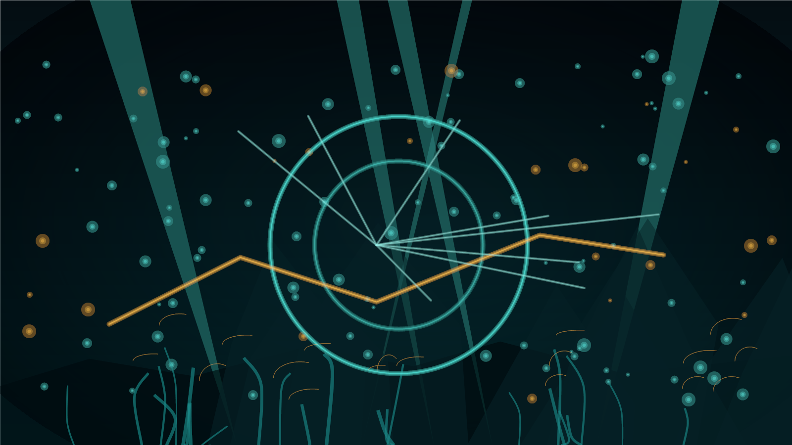
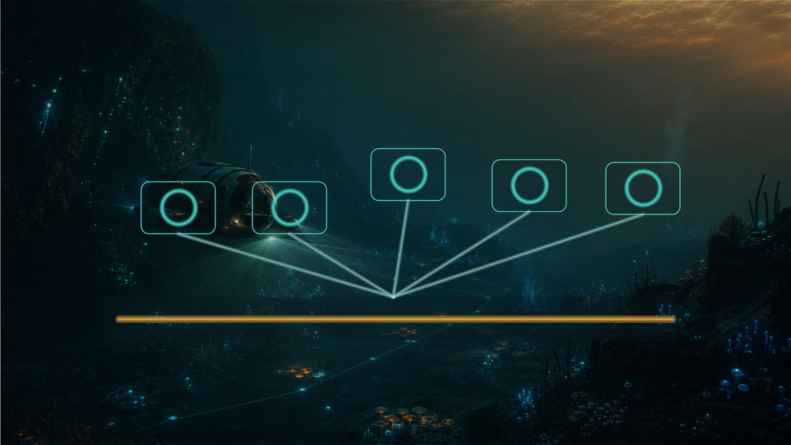

Player value
Rank whether the unlock improves mobility, survivability, progression, base work, or co-op efficiency.
S2GuideHub presents
High-value unlock routes for Subnautica 2: why an item matters, what it requires, how to plan the trip, what risks to avoid, and what to collect along the way.

Blueprint Atlas
This homepage is no longer a broad guide directory. It is a route-first console for deciding which unlock to pursue next and what evidence is still missing before exact route claims go public.
Rank whether the unlock improves mobility, survivability, progression, base work, or co-op efficiency.
Track fragments, components, crafting stations, tools, prerequisites, and future source links.
Convert scattered requirements into a stop order that reduces distance, backtracking, and oxygen risk.
Warn about depth, hostile zones, missing prerequisites, and easy benefits near the same trip.
Featured unlocks
These are planning entries, not finished walkthroughs. Exact coordinates, component counts, and route timing stay pending until verified and dated.

Guide logic
The Atlas should be predictable. A player opening any unlock page should know exactly where to find value, requirements, route assumptions, warnings, and sources.
State the practical benefit and who should prioritize it.
List components, fragments, prerequisites, tools, and crafting station needs.
Show stop order, return plan, assumptions, and backup route.
Flag depth limits, oxygen pressure, hostile areas, dead ends, and patch-sensitive issues.
Call out useful materials, scans, shortcuts, or base opportunities worth combining.
Unlock index
Use this as the first structured database. Filters group entries by player value while confidence chips keep unverified guide data honest.
Route planner preview
The public MVP can show how a route will be structured without pretending that every location is verified. Coordinates can be added later with sources and dates.
Future item page template
Define minimum tools, oxygen margin, storage, and return condition.
Group required fragments and components into the least wasteful trip order.
Confirm crafting station, prerequisites, and what the unlock enables next.
Record version, source, verification level, and any patch-sensitive notes.
Blog signal
Future blog automation should focus on blueprint discoveries, corrected coordinates, route improvements, patch changes, and high-value unlock ranking updates.
Silver, Hammerhead behavior, and what the latest gameplay-relevant patch changes for Tadpole route planning.
Read the blogUpdates when a safer stop order, shortcut, or return plan is verified.
Notes for item requirements, locations, or confidence labels affected by Early Access patches.
FAQ
No. S2 Guide Hub is an independent fan-made guide website and is not affiliated with Unknown Worlds Entertainment, KRAFTON, Steam, Xbox, or the official Subnautica franchise.
Early Access changes quickly. Exact coordinates, component counts, and route times will be published only after they are verified and dated.
Full map sites already exist. This Atlas focuses on player decisions: what is worth getting, what it requires, how to route it, and what risks matter.
Yes. The Atlas keeps English first and Simplified Chinese support from launch so terminology and route logic can stay readable for both audiences.